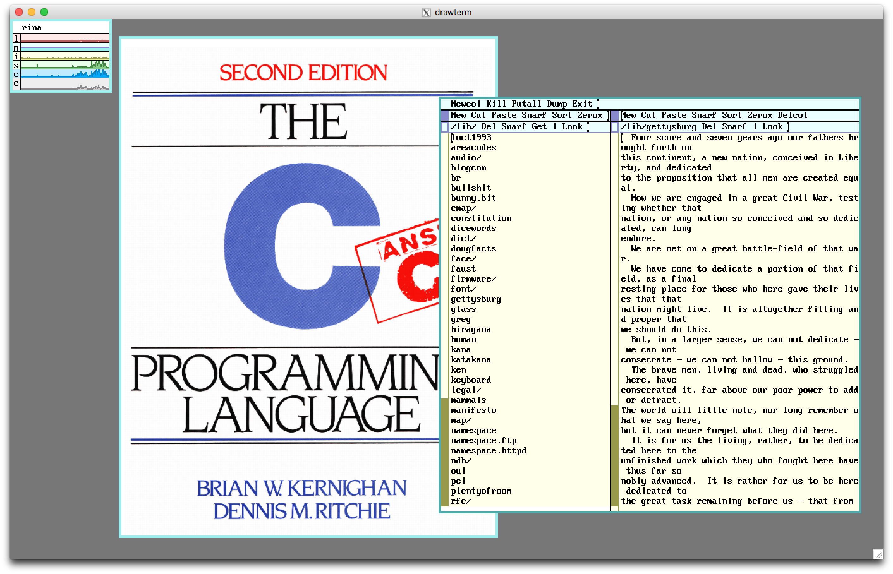

Based on 9front-5966.df2c352ae695
This is a collection of notes on how to complete tasks I've found myself commonly performing while using 9front.
Note that most of what is here is straight from various parts of the 9front FQA, just ordered differently. If not from the FQA, I'll provide the source under the header for the section.
As I'm in the process of learning Plan 9/9front, feel free to comment with suggestions or corrections.
% cd /
% rc /sys/lib/rootstub
% cd /sys/src
% objtype=amd64 mk install
% cd /sys/src/9/pc64
% mk installNow the amd64 kernel has been built. Before copying it to 9bootfat so we can boot from it, do
% 9fs 9fat
% rm /n/9fat/9bootfat
% cp /386/9bootfat /n/9fat/ # I think bootloader is 386 only, so do this even when installing amd64
% chmod +al /n/9fat/9bootfat # defrag magicNext, copy the kernel
% cp /amd64/9pc64 /n/9fat/Finally, edit the bootfile variable in /n/9fat/plan9.ini to use the 9pc64 kernel: bootfile=9pc64
Reboot.
Following these steps sets up a machine with 9front installed as a cpu AND auth server. I don't cover fileserver configuration since I've just been logging in as glenda, but it is covered in FQA 7.3.
For those of us coming from the *nix world... setting up a machine running 9front as a cpu & auth server will allow you to remote into it using drawterm (covered later) and have access to the rio GUI. Similar to X11 forwarding using ssh -X. I don't currently know the nitty-gritty of how it works, but remote access was something I wanted to set up right away.

drawterm in X11 on macOS
First, add the line service=cpu to /n/9fat/plan9.ini. This defines the service variable during the boot process so the cpu kernel is booted
Reboot with fshalt -r.
Upon rebooting, you'll get something along the lines of the following
bad nvram key
bad authentication id
bad authentication domain # You may not see these errors.
authid: <glenda>
authdom: <9front>
secstore key:
password: [glenda’s password]Enter glenda for authid, 9front (or anything you want) for authdom, hit return for secstore key, and enter a password.
Now you'll be in an rc shell only, no rio GUI. You can run rio -i riostart if you prefer to make the rest of the changes using acme, sam etc., but I tend to just use ed to make the edits via the command line.
If you installed the cwfs filesystem instead of hjfs, reboot with fshalt -r. When prompted for bootargs during boot, enter local!/dev/sdXX/fscache -c, where XX corresponds to whatever your drive identifier is. Then type noauth twice, followed by end:
config: noauth
auth is now disabled
config: noauth
auth is now enabled
config: endFinally, 9fs 9fat and edit /n/9fat/plan9.ini. Change the bootargs variable to one of the following.
For cwfs
bootargs=local!/dev/sdXX/fscache -a tcp!*!564For hjfs
bootargs=local!/dev/sdXX/fs -m 702 -A -a tcp!*!564Note: 702 will probably be a different value on your install, just don't change the value from what it was by default.
Reboot with fshalt -r. We're now listening for connections.
All we need to do for this is edit the file /lib/ndb/local, but this was a bit tricky for me at first. The contents of this file on a fresh install of 9front-5966.df2c352ae695 are
#
# files comprising the data,base, use as many as you like, see ndb(6)
#
database=
file=/net/ndb
file=/lib/ndb/local
file=/lib/ndb/common
#
# entries defining the dns root. these will be overridden by any
# authentic info obtained from the root.
#
dom=
ns=A.ROOT-SERVERS.NET
ns=B.ROOT-SERVERS.NET
ns=C.ROOT-SERVERS.NET
ns=D.ROOT-SERVERS.NET
ns=E.ROOT-SERVERS.NET
ns=F.ROOT-SERVERS.NET
ns=G.ROOT-SERVERS.NET
ns=H.ROOT-SERVERS.NET
ns=I.ROOT-SERVERS.NET
ns=J.ROOT-SERVERS.NET
ns=K.ROOT-SERVERS.NET
ns=L.ROOT-SERVERS.NET
ns=M.ROOT-SERVERS.NET
#
# because the public demands the name localsource
#
ip=127.0.0.1 sys=localhost dom=localhost
# example: adjust to fit your network
#auth=cirno authdom=9front
#ipnet=9front ip=192.168.0.0 ipmask=255.255.255.0
# ipgw=192.168.0.1
# dns=192.168.0.1
# auth=cirno
# dnsdom=9front
# cpu=cirno
# smtp=cirno
#
#ip=192.168.0.99 sys=cirno dom=cirno.9front ether=112233445566
sys=cirno ether=000c29e16a29Before making the changes, run ndb/query sys <sysname> to get some info about your network. It will output something like
ip=192.168.1.23 ipmask=255.255.255.0 ipgw=192.168.1.1 sys=cirno dns=192.168.1.1
sys=cirno ether=000c29e16a29Use this information to edit /lib/ndb/local so it looks similar to
#
# files comprising the data,base, use as many as you like, see ndb(6)
#
database=
file=/net/ndb
file=/lib/ndb/local
file=/lib/ndb/common
#
# entries defining the dns root. these will be overridden by any
# authentic info obtained from the root.
#
dom=
ns=A.ROOT-SERVERS.NET
ns=B.ROOT-SERVERS.NET
ns=C.ROOT-SERVERS.NET
ns=D.ROOT-SERVERS.NET
ns=E.ROOT-SERVERS.NET
ns=F.ROOT-SERVERS.NET
ns=G.ROOT-SERVERS.NET
ns=H.ROOT-SERVERS.NET
ns=I.ROOT-SERVERS.NET
ns=J.ROOT-SERVERS.NET
ns=K.ROOT-SERVERS.NET
ns=L.ROOT-SERVERS.NET
ns=M.ROOT-SERVERS.NET
#
# because the public demands the name localsource
#
ip=127.0.0.1 sys=localhost dom=localhost
# example: adjust to fit your network
auth=cirno authdom=9front
ipnet=9front ip=192.168.0.0 ipmask=255.255.255.0
ipgw=192.168.0.1
dns=192.168.0.1
auth=cirno
dnsdom=9front
cpu=cirno
fs=cirno
# smtp=cirno
#
#ip=192.168.0.99 sys=cirno dom=cirno.9front ether=112233445566
sys=cirno ether=000c29e16a29Note: The indentation of the lines under ipnet=9front ip=192.168.0.0 ipmask=255.255.255.0 DOES matter.
A more detailed explanation:
auth and cpu must be set to the system name.authdom can be anything, but has to match the authdom we entered at the boot prompt earlier.ipnet should match authdom.ipmask, ipgw, and dns should be changed to values from the output of ndb/query sys <sysname>.ip does NOT match the output from ndb/query sys <sysname>. In /lib/ndb/local, ip must be set to the subnet ID of the network. This just means the last digit is 0. For example, if the output of ip from ndb/query sys <sysname> was 156.43.9.78, ip in /lib/ndb/local should be set to 156.43.9.0.Reboot with fshalt -r.
Run auth/changeuser glenda to get the following
Password: # type password here, will not echo
Confirm password: # confirm password here, will not echo
assign Inferno/POP secret? (y/n) n
Expiration date (YYYYMMDD or never)[return = never]:
2 keys read
Post id:
User’s full name:
Department #:
User’s email address:
Sponsor’s email address:
user username installed for Plan 9Note: Password MUST match what you entered for glenda earlier!
After assign Inferno/POP secret? (y/n) n you can just hit enter for everything else.
If everything is set up correctly, running netaudit should output something like
checking this host's tuple:
ip=192.168.1.23 looks ok
no dom= entry
ether=000c29e16a29 looks ok
checking the network tuple:
we are in ipnet=9front
ipgw=192.168.1.1 looks ok
dns=192.168.1.1 look ok
auth=cirno looks ok
checking auth server configuration:
we are the auth server
auth/keyfs is running
someone is listening on port 567
run auth/debug to test the auth server
run auth/asaudit to verify auth server configurationYou'll probably want to be able to access websites and have rio running when you connect via drawterm. While you can add whatever you like to your profile, I recommend adding the following to /usr/glenda/lib/profile:
webfs
bind -b '#S' /dev
rio -i riostartAdd those right below fn cpu% { $* } and you'll be able to interact with URLs, mount 9fat or other filesystems via 9fs, and rio will start automatically on connect.
drawtermDownload and install 9front's fork of drawterm on the machine you want to connect to the 9front server from. As stated on the website, this version of drawterm is needed to connect to a 9front server due to some security protocol changes. Russ Cox's version won't work... that tripped me up initially.
Run drawterm -h <server_ip> -u glenda. A rio window with a prompt should appear. Hit return at the auth prompt, then type the password for glenda. We're in!